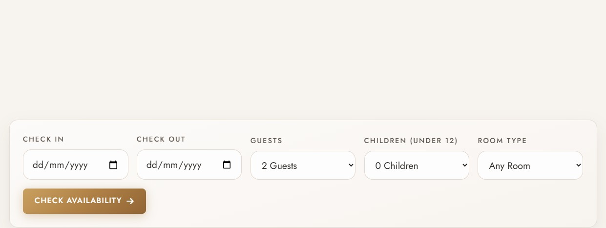
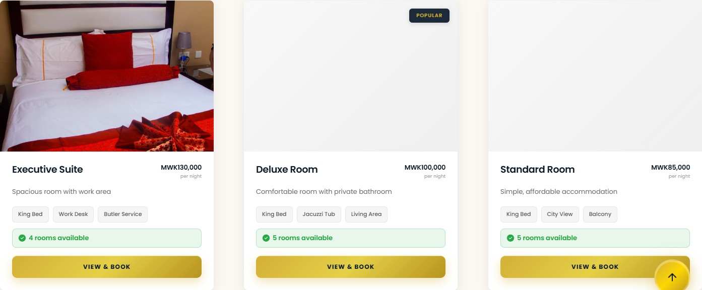

Interface fragmentBuild
Operations & booking UIA visual slice of the kind of booking, availability and workflow interfaces we build.
We build the software you run on, source the computer and gaming equipment you want, and pick up the phone when any of it stops working — one small team, answering directly, wherever you are.
The person scoping your project is the person writing the code or placing the order. Nothing gets lost being relayed.
We work to the number you have, not the one we would prefer. If it will not stretch far enough, we say so and suggest what to drop.
Delivery is where the real questions start. Support and iteration are part of the work, not a separate contract you discover later.
Three ways we help, in the order most clients need them. Take one or take all three — it is the same team either way.
The booking system, the internal dashboard, the product you have been describing to people for a year. We scope it, design it, build it, launch it — and keep improving it once real users arrive.
Tell us the kit and the budget. We handle supplier coordination, purchasing, shipping and delivery.
New machines set up, accounts recovered, software installed and the everyday faults that stop a working day — sorted, mostly over a call.
ProManaged has delivered hotel-management software for businesses in Malawi — booking, availability, room workflows and the day-to-day management tools a hotel actually runs on.
A complete hotel-management system for a Malawian hotel — a public booking experience and the operational system behind it.


Much of what makes a system real is that it has been delivered more than once. The Liwonde Sun Hotel website shows the same booking and room-availability experience live, for a second Malawian hotel.

The guest-facing room catalogue with real-time availability — from the same system the hotel team operates.

Both properties run public websites designed around booking first — the kind of software that has to be simple for guests and dependable for staff.
Both systems serve businesses in Malawi — real deployments, not concept work.
Booking, availability and management flows that a working hotel relies on every day.
The full system story lives on the Build page.
You describe the problem in plain words. No brief required — most people arrive with a spreadsheet and a workaround that has quietly become the job.
We come back with a scope, realistic timeline and honest cost — including what we would leave out, and whether the budget is better spent elsewhere.
We build, source or install, showing progress as we go. You can see what is done, what is moving and what is waiting on you.
Questions after launch are part of the relationship. Quiet checks, fixes and second opinions — not a separate contract you discover later.

ProManaged IT grew from a practical belief: useful technology should make work simpler, not give people another system to manage.
That means building what genuinely needs to be built, sourcing what is better bought, and staying on hand when the everyday things stop working.
Good engineering starts with knowing what matters and refusing to add what does not.
Tell us what is getting in the way. We will help you work out what should happen next.